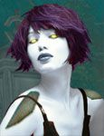

Shellyah
Age : Indéfini
Sexe : Femme
Race : Mort-vivant
Faction : Horde
Formation : Voleur
Description : Jentends
Le bruit de mes os se broyer
Jentends
Encore ce fracas atroce mêlé aux cris
Je revois son visage, crispé, figé, ce visage qui riait encore à gorge déployée quelques secondes avant
La situation la dépasse, elle ne le contrôle plus désormais
Tout sest passé si lentement pourtant
Je me revois encore sur les quais de Booty Bay, me remettant lentement de ce naufrage qui faillit me prendre la vie.
Je devais me rendre au donjon de Northwatch, embarquée sur un de ces
navires militaires que jaffectionnait tant...
« LEcumeur », comme ils lappelaient, fort de sa prestance et de son équipage pour le moins
hétéroclite composé de militaires, mercenaires, quelques nobliaux au sourire pincé et à la poche bien pleine et quelques filles de joies embarquées pour loccasion.
Plutôt aisé de voyager à lil finalement, bien que je fusse plutôt
agréablement bien escortée par un second, pour le moins, remarquable
Effectivement la balade fut de courte durée et, alors que nous faisions route, notre route croisa celle dun navire de la Horde. Coque boursouflée, arrêtes saillantes toutes voiles dehors, il chargea
Une apocalypse que ce jour, lorsque les navires, après avoir échangé nombre de tirs dévastateurs et mis la cargaison « civile » de notre navire en panique, se heurtèrent pour vomir les troupes barbares sur le pont de « LEcumeur ».
Tranchants, hurlants, le champ de bataille flottant couvert de sang, la fierté de la flotte de Stormwind fut envoyée par le fond avec tout son équipage.
Je revoyais encore mon Taak se débattre sur le pont, au prises avec de farouches orcs et autres trolls, tandis que je reçu un coup derrière la tête après avoir égorgé lun deux.
Comment men suis-je sortie ? Je ne men souviens guère
Mais à ce que le vieux pécheur avait expliqué à linfirmière penchée au dessus de moi, javais du dériver plusieurs miles du lieu présumé du sombre théâtre sur un flotteur improvisé avant de me faire hisser à bord de son frêle esquif.
Personne na su me dire ce quétaient devenu les autres, y compris Taak
Outre une méchante blessure à la tête, jétais plutôt en sale état, et cette infirmerie sinistre ne minspirait rien de bon
Des tubards et autres, pestiférés, lodeur du sang et linsalubrité générale, me donnait des hauts le cur
Et pourtant il en fallait plus que çà dordinaire
Dans la nuit je me suis échappée de ce taudis, tout ces regards obliques des « robes » et autres apothicaires sur moi ne minspiraient rien de bon.
Jai enfin pu rejoindre Northwatch, bien que ces nausées devenaient de plus en plus fréquentes, je fut, bien malgré moi témoin de lattaque du donjon par la Horde
Une armada infernale se profilait à lhorizon, navires aux lignes agressives, flotte sauvage aux abords de nos côtes.
Voici un moment que les troupes de lAlliance devaient attendre cette offensive. Peut être que la continuité de cette fâcheuse promiscuité dont nous fumes victimes avec « LEcumeur » était là, devant nous.
Sur les remparts toute la garnison était sur le pied de guerre, et dans les airs, plusieurs de ces machines gnomes infernales afin de surveiller lhorizon.
Des hurlements, les premières rafales venant de la grande bleue, et nous y voici
A peine ais-je eu le temps de lever les yeux, quune de ces machines seffondrait déjà sur moi...
Plus d'infos sur Shellyah >>>Lire le récit de Shellyah >>>